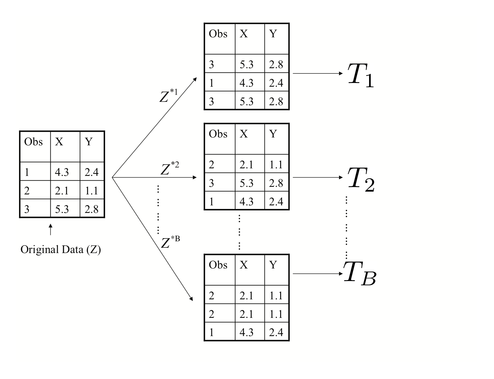

31 Tree-Based Methods
We saw in previous units the limitation of using linear methods for classification. In particular, the partition of predictor space into regions using a linear model like logistic regression is very limiting. In this unit, we look at a set of elegant and versatile methods that allow these regions to take more complex shapes, but still produce models that are interpretable. These are very popular, well-known and studied methods in Statistical Learning. We will concentrate on Regression and Decision Trees and their extension to Random Forests.
31.1 Regression Trees
Consider a task where we are trying to predict a car’s fuel consumption in miles per gallon based on the car’s weight. A linear model in this case is not a good fit.
## Warning: package 'tree' was built under R version 3.4.4##
## Attaching package: 'ISLR'## The following object is masked _by_ '.GlobalEnv':
##
## AutoLet’s take a look at what a regression tree estimates in this case.
The decision trees partitions the weight predictor into regions based on its value. We can show this graphically as below. The idea behind the regression tree is that outcome \(Y\) (mpg in this case) is estimated (or predicted) to be it’s mean within each of the data partitions. Think of it as the conditional mean of \(Y\) where conditioning is given by this region partitioning.
Regression and decision trees operate by prediction an outcome variable \(Y\) by partitioning feature (predictor) space.
The regression tree model then:
- Partitions space into \(J\) non-overlapping regions, \(R_1, R_2, \ldots, R_J\).
- For every observation that falls within region \(R_j\), predict response as mean of response for training observations in \(R_j\).
The important observation is that Regression Trees create partition recursively
For example, consider finding a good predictor \(j\) to partition space its axis. A recursive algorithm would look like this:
- Find predictor \(j\) and value \(s\) that minimize RSS:
\[ \sum_{i:\, x_i \in R_1(j,s))} (y_i - \hat{y}_{R_1})^2 + \sum_{i:\, x_i \in R_2(j,s))} (y_i - \hat{y}_{R_2})^2 \]
Where \(R_1\) and \(R_2\) are regions resulting from splitting observations on predictor \(j\) and value \(s\):
\[ R_1(j,s) = \{X|X_j < s\} \mathrm{ and } R_2(j,s) \{X|X_j \geq s\} \]
This is then applied recursively to regions \(R_1\) and \(R_2\). Within each region a prediction is made using \(\hat{y}_{R_j}\) which is the mean of the response \(Y\) of observations in \(R_j\).
Consider building a model that used both horsepower and weight. In this plot the value of the response \(Y\) is indicated by the size of the point.
This is what a decision tree would look like for these two predictors:
31.2 Classification (Decision) Trees
Classification, or decision trees, are used in classification problems, where the outcome is categorical. The same partitioning principle holds, but now, each region predicts the majority class for training observations within region.
The recursive partitioning method requires a score function to choose predictors (and values) to partition with. In classification we could use a naive approach of looking for partitions that minimize training error. However, better performing approaches use more sophisticated metrics, which we will see shortly.
Let’s look at how a classification tree performs on a credit card default dataset.
31.3 Specifics of the partitioning algorithm
31.3.1 The predictor space
Suppose we have \(p\) explanatory variables \(X_1,\ldots,X_p\) and \(N\) observations.
Each of the \(X_i\) can be
- a numeric variable: there are \(n-1\) possible splits
- an ordered factor (categorical variable): there are \(k-1\) possible splits
- an unordered factor: \(2^{k-1}-1\) possible splits.
31.3.2 Learning Strategy
The general procedure for tree learning is the following:
- Grow an overly large tree using forward selection as follows: at each step, find the best split among all attributes. Grow until all terminal nodes either
- have \(< m\) (perhaps \(m=1\)) data points
- are “pure” (all points in a node have [almost] the same outcome).
- Prune the tree back, creating a nested sequence of trees, decreasing in complexity
31.3.3 Tree Growing
The recursive partitioning algorithm is as follows:
INITIALIZE All cases in the root node
REPEAT Find optimal allowed split
Partition leaf according to split
STOP Stop when pre-defined criterion is met
A problem in tree construction is how to use the training data to determine the binary splits of dataset \(\mathcal{X}\) into smaller and smaller pieces. The fundamental idea is to select each split of a subset so that the data in each of the descendent subsets are “purer” than the data in the parent subset.
31.3.4 Deviance as a measure of impurity
A simple approach is to assume a multinomial model and then use deviance as a definition of impurity.
Assume \(Y \in \mathcal{G}=\{1,2,\ldots,k\}\).
At each node \(i\) of a classification tree we have a probability distribution \(p_{ik}\) over the \(k\) classes.
We observe a random sample \(n_{ik}\) from the multinomial distribution specified by the probabilities \(p_{ik}\).
Given \(X\), the conditional likelihood is then proportional to \(\prod_{(\text{leaves } i)} \prod_{(\text{classes } k)} p_{ik}^{n_{ik}}\).
Define a deviance \(D=\sum D_i\), where \(D_i=-2\sum_k n_{ik} \log(p_{ik})\).
Estimate \(p_{ik}\) by \(\hat{p}_{ik}=\frac{n_{ik}}{n_i}\).
31.3.5 Other measures of impurity
Other commonly used measures of impurity at a node \(i\) of a classification tree are
missclasification rate: \(\frac{1}{n_i} \sum_{j\in A_i} I(y_j \neq k_i)=1-\hat{p}_{ik_i}\)
entropy: \(\sum p_{ik} \log(p_{ik})\)
GINI index: \(\sum_{j\neq k} p_{ij}p_{ik} = 1-\sum_k p_{ik}^2\)
where \(k_i\) is the most frequent class in node \(i\).
For regression trees we use the residual sum of squares:
\[ D = \sum_{\text{cases } j} (y_j-\mu_{[j]})^2 \]
where \(\mu_{[j]}\) is the mean values in the node that case \(j\) belongs to.
31.3.6 Tree Pruning
- Grow a big tree \(T\)
- Consider snipping off terminal subtrees (resulting in so-called rooted subtrees)
- Let \(R_i\) be a measure of impurity at leaf \(i\) in a tree. Define \(R=\sum_i R_i\)
- Define size as the number leaves in a tree
- Let \(R_{\alpha} = R + \alpha \times \mathrm{size}\)
The set of rooted subtrees of \(T\) that minimize \(R_{\alpha}\) is nested.
31.4 Properties of Tree Method
Good properties of Regression and Classification trees include:
- Decision trees are very “natural” constructs, in particular when the explanatory variables are catgorical (and even better when they are binary)
- Trees are easy to explain to non-data analysts
- The models are invariant under transformations in the predictor space
- Multi-factor responses are easily dealt with
- The treatment of missing values is more satisfactory than for most other models
- The models go after interactions immediately, rather than as an afterthought
- Tree growth is much more efficient than described here
However, they do have important issues to address
- Tree space is huge, so we may need lots of data
- We might not be able to find the best model at all as it is a greedy algorithm
- It can be hard to assess uncertainty in inference about trees
- Results can be quite variable (tree selection is not very stable)
- Simple trees usually don’t have a lot of predictive power
31.5 Random Forests
Random Forests are a very popular approach that addresses these shortcomings via resampling of the training data. Their goal is to improve prediction performance and reduce instability by averaging multiple decision trees (a forest constructed with randomness). It uses two ideas to accomplish this.
The first idea is Bagging (bootstrap aggregation)
General scheme:
1. Build many decision trees \(T_1, T_2, \ldots, T_B\) from training set
2. Given a new observation, let each \(T_j\) predict \(\hat{y}_j\)
3. For regression: predict average \(\frac{1}{B} \sum_{j=1}^B \hat{y}_j\),
for classification: predict with majority vote (most frequent class)
How do we get many decision trees from a single training set?
For this we use the bootstrap resampling technique. To create \(T_j, \, j=1,\ldots,B\) from training set of size \(n\):
- create a bootstrap training set by sampling \(n\) observations from training set with replacement
- build a decision tree from bootstrap training set

The second idea used in Random Forests is to use a random selection of features to split when deciding partitions. Specifically, when building each tree \(T_j\), at each recursive partition only consider a randomly selected subset of predictors to check for best split. This reduces correlation between trees in forest, improving prediction accuracy.
Let’s look at the same car dataset again
set.seed(1234)
train_indices <- sample(nrow(Auto), nrow(Auto)/2)
train_set <- Auto[train_indices,]
test_set <- Auto[-train_indices,]
library(randomForest)## Warning: package 'randomForest' was built under R version 3.4.4## randomForest 4.6-14## Type rfNews() to see new features/changes/bug fixes.##
## Attaching package: 'randomForest'## The following object is masked from 'package:dplyr':
##
## combine## The following object is masked from 'package:ggplot2':
##
## marginLet’s plot the predicted miles per gallon given by a random forest compared to the observed miiles per gallon in the training dataset.
Now let’s look at the same plot on a testing dataset.
A disadvantage of random forests is that we lose interpretability. However, we can use the fact that a bootstrap sample was used to construct trees to measure variable importance from the random forest.
Here is a table of variable importance for the random forest we just constructed.
| %I | ncMSE In | cNodePurity |
|---|---|---|
| cylinders | 15.11 | 2328.05 |
| displacement | 20.00 | 2480.60 |
| horsepower | 21.39 | 2779.68 |
| weight | 19.88 | 2325.81 |
| acceleration | 8.01 | 377.69 |
| year | 43.20 | 1341.62 |
And a barplot of the same data.
31.6 Tree-based methods summary
Tree-based methods are very interpretable prediction models. For which some inferential tasks are possible (e.g., variable importance in random forests), but are much more limited than the linear models we saw previously. These methods are very commonly used across many application domains and Random Forests often perform at state-of-the-art for many tasks.